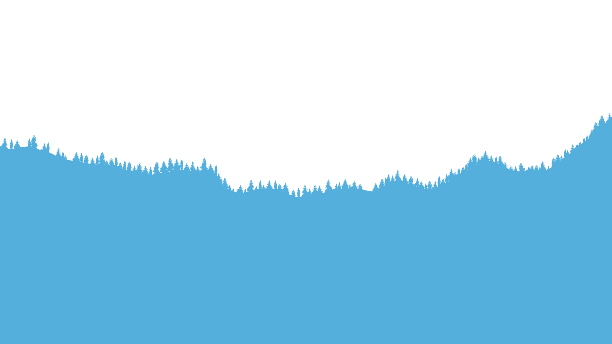
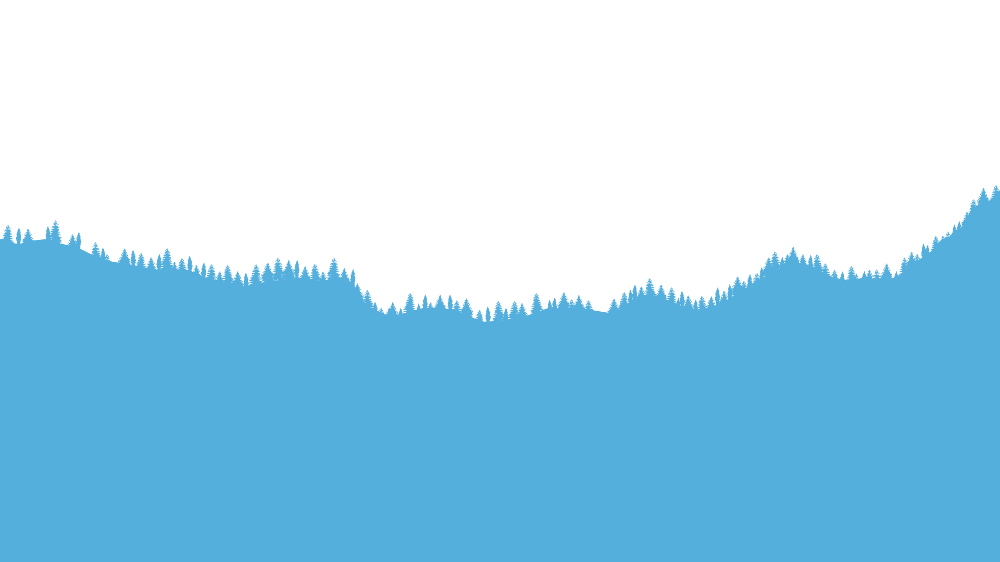

Info:
Client: Academic
Type: UI/UX & User Research
Tools Used:
SetupXR
The main objective of SetupXR is to address the issue of limited leg mobility and lack of accessibility within existing Virtual Reality applications. The goal is to create a UI/UX solution that is easy to use and enables disabled individuals to set up alternate means of achieving room-scale functionality (i.e., crouching, walking, and standing) within VR. One of the communication objectives of this project is to encourage discussions about accessibility in the relatively new space of Virtual Reality. There is a need to change the current perception of accessibility within the VR space and raise awareness of the issue. Many corporations are ignoring this issue, leaving disabled individuals unable to participate. Additionally, an outcome of this project is to create a succinct and user-friendly UI/UX design that allows users with limited leg mobility to feel excited and relieved to finally be able to use room-scale interactions within VR. The goal is to bridge the gap between those with limited mobility and those without, making VR more accessible to all.
The webapp can be accessed here. The figma prototype can be accessed here.Problem Statement
Personas Spectrum & Personas
Using Microsoft’s inclusive design framework, three main categories of users were determined. Those with permanent, temporary and situational disabilities. The following personas each represent one category within the persona spectrum.


Combined Goals
- Make use of limited space
- Connect with others
- Stay in shape
- Use VR with limited leg mobility
- Quick and easy setup
User Journey
This User Journey map follows our persona, Remi. He has a situational disability as identified by the Persona Spectrum, and he is looking for a solution that covers his use case of having limited space. The problem is purely a user interface one, thus allowing him to overcome it with additional controls, enabling him to complete his goal.

Primary & Technical Research
The main objective of SetupXR is to address the issue of limited leg mobility and lack of accessibility within existing Virtual Reality applications. The goal is to create a UI/UX solution that is easy to use and enables disabled individuals to set up alternate means of achieving room-scale functionality (i.e., crouching, walking, and standing) within VR. One of the communication objectives of this project is to encourage discussions about accessibility in the relatively new space of Virtual Reality. There is a need to change the current perception of accessibility within the VR space and raise awareness of the issue. Many corporations are ignoring this issue, leaving disabled individuals unable to participate. Additionally, an outcome of this project is to create a succinct and user-friendly design that allows users with limited leg mobility to feel excited and relieved to finally be able to use room-scale interactions within VR. The goal is to bridge the gap between those with limited mobility and those without, making VR more accessible to all.
Using Microsoft’s inclusive design framework, three main categories of users were determined. Those with permanent, temporary and situational disabilities. The following personas each represent one category within the persona spectrum.
For my primary testing, user testing was conducted using Github Pages and a .apk file built from Android Studio. This approach allowed for testing across various devices, from computers with differing window sizes to Androids and iPhones. The feedback received during user testing was positive overall, with little critique about the website's functionality and navigation. Users found the website clean, fast, and easy to navigate. However, some notable feedback was received, which included:
- Suggesting that FPSVR should be able to track external trackers, in addition to the controller/headset battery.
- Recommending that the sidebar should not use a gradient for selected objects.
- Suggesting the use of a progress bar at the top to indicate how far the setup process has gone.
- Recommending that the Oculus setup could be a dialogue popup like the other SteamVR setup.
- Noting that the troubleshooting link in the sidebar does not do anything on the performance page.
- Suggesting that users should be advised to use SteamVR Performance Test to determine if their computer can even run VR.
Most of this feedback was incorporated into the final build of the project, ensuring that the design solution meets the needs of all users and is as user-friendly as possible.
Secondary Research
Having fitting physical interactions help increase realism and immersion - in the past, wheelchair locomotion made use of a motorized system for the purpose of Virtual Reality navigation. In addition, standardized controls for VR hand controllers can greatly improve accessibility for users, enabling a wider range of individuals to enjoy virtual reality experiences. Moreover, research indicates that regular virtual reality exercise can lead to improved sleep quality among older individuals, highlighting the potential health benefits of incorporating exercise into virtual reality experiences.
The market size for augmented reality (AR), virtual reality (VR), and mixed reality (MR) is rapidly growing. According to industry projections, the market is expected to grow from 30.8 billion USD in 2021 to 296.9 billion USD in 2024. As such, it is increasingly important for UI/UX designers to create accessible and inclusive virtual reality experiences that cater to the diverse needs of users around the world.
Reflection
This design project involved creating a resource that users can utilize to find accessibility programs, setup information, instructions, as well as troubleshooting and other common questions related to the initial ownership of VR devices. Originally, the project was centered around setting up the Xbox adaptive controller to work with VR devices, but as the project progressed, the decision was made to pivot towards creating a more comprehensive UI/UX solution that showcases how to set up the VR devices for accessibility. This pivot led to the development of a tool focused on accessibility, which is the project's current form.
The primary goal of the project was to provide an easy-to-use resource that would assist users with disabilities in accessing VR devices. By focusing on accessibility, the UI/UX design solution provides a practical and effective means for users to enjoy virtual reality. The resource is designed to be user-friendly and straightforward, ensuring that users can access the information they need without any difficulties. The project's success was measured by its ability to help users with disabilities set up and enjoy VR devices, and it has been well-received by users who could potentially benefit from the resource.

 
